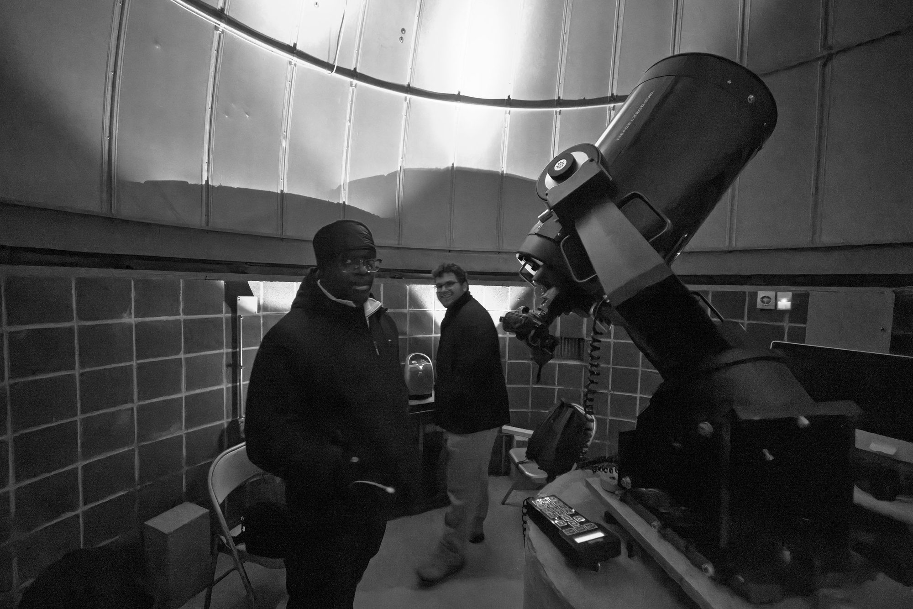
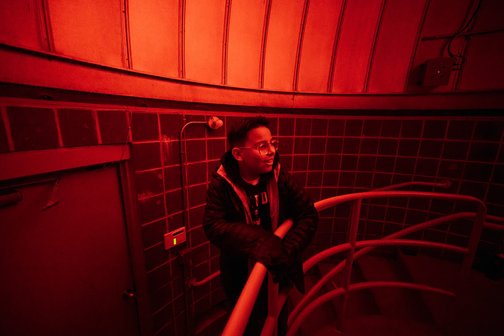
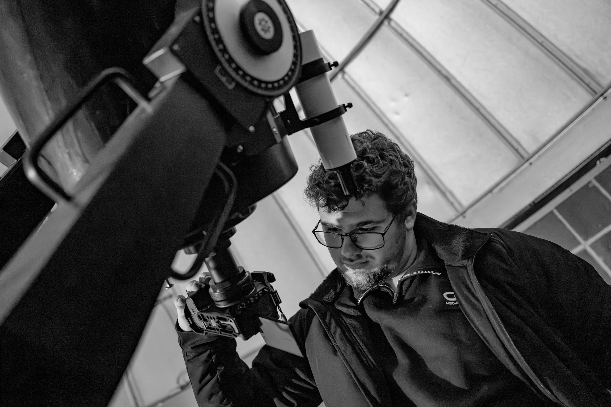
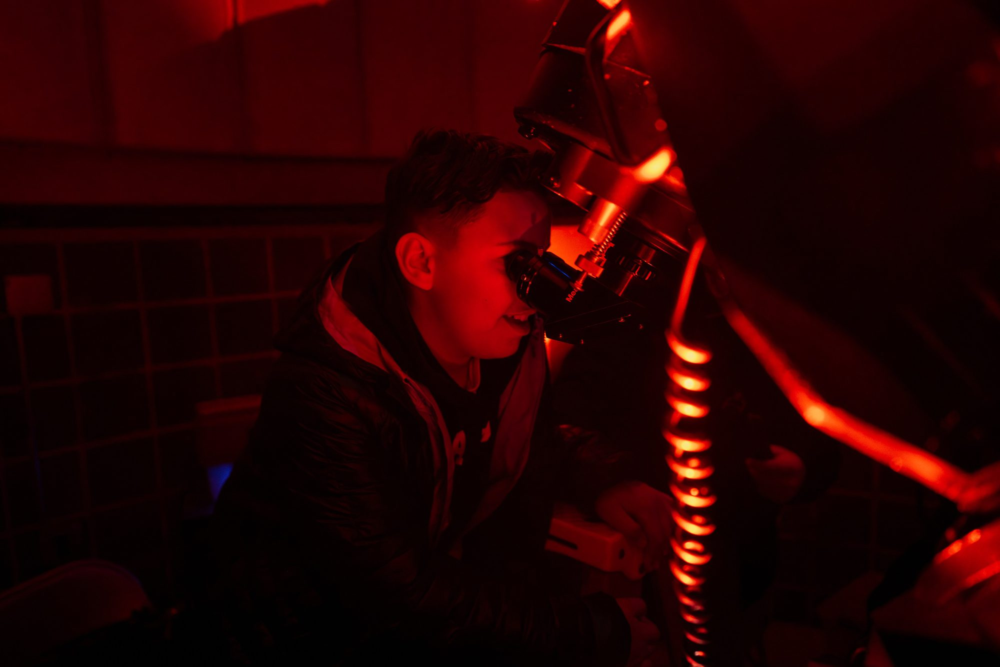

Super or Not, Go Look
Six nights after the night I wrote about in Part 5, I was back in the same dome at the Kent State University Observatory with TJ Laryea and Derek Galperin. This time I brought my son, Abdel. Some people call him Abe. It was November 24, the night of a supermoon, when a full Moon lines up with the closest part of its orbit and looks about 7 percent wider than an average full Moon. NASA’s own explainer admits the difference is hard to see by eye, and honestly, I couldn’t have picked it out of a lineup. That night it sat 353,988 kilometers from the dome. I looked that number up afterward. Standing there, all I could have told you was that it was bright.
Early on, TJ said what anyone who read Part 5 could have predicted: “I’m no expert, but I don’t think we set this up right.” He wasn’t wrong. Like last time, I was standing at the keypad with my phone, asking Claude for help. I sent it a photo of the handbox, and it recognized the old LX200 keypad and walked us through polar mode one step at a time. When the motor quit before the tube reached 90 degrees, it told us to loosen the lock and move it by hand, which worked. When I asked what the RA lock even was, it told me where to find it. It also told us to check with whoever runs the observatory before touching the wedge bolts, which was the most responsible thing anyone said all night.
Then it gave me the keypad code for the Moon, with a note that it might have the number wrong, and the telescope swung to the opposite side of the sky. That’s me on TJ’s camera, sounding less amused than everyone else, dictating it back to Claude: it “completely went to the opposite side of the sky.” Its best guess was a wrong time or longitude buried in the handbox settings, but its most useful advice was to stop fixing and start looking. So I drove it to the Moon with the arrow keys while Derek reported back from the eyepiece, “I see the roof,” and then, a while later, “I still see the roof.”
I’ll be honest about why this one makes me more nervous to share than the others. Part 5 was about my friends meeting the Moon. This one has my kid in it, and a lot of my voice, and I still can’t stand hearing my own voice played back. I’ve spent twenty years behind the camera for a reason. But the best moment of the night happened at 10:16, and it was his.


TJ made him wait. The lights were red, the Moon was centered, and TJ held him back: “Wait, wait, wait, don’t look at it.” Then, finally, “Okay Abe, you can go ahead now.” Abe leaned in, and on TJ’s footage you can see him pull his head back from the eyepiece. “Whoa.” Derek said, “It’s bright.” Then I asked my one question of the whole moment, which I’d cut if I could stand to listen to it again: “See anything?”
“I see a white blob.”
I’ve been photographing the Moon for years, and I’m not sure I’ve ever described a full one more accurately. Under a full Moon the sunlight hits the surface straight on, so there are almost no shadows to show you the shape of anything, and through a big telescope it’s bright enough to make you squint. A white blob is exactly what it is, until your eye settles and the seas and craters start coming up out of the glare.
The longer he looked, the stranger it got. “Whoa, it changed,” Abe said, and TJ and I asked at exactly the same moment, “Is it moving?” It was. At that magnification the Moon slides across the eyepiece fast enough to watch. I answered with what I thought was a pretty good explanation: “We’re both moving, but we’re in sync.” It was about half right. The Earth turns, and the mount is supposed to turn the telescope at the same rate so the Moon stays put. If we’d really been in sync, it wouldn’t have moved. Our mount wasn’t set up right, the Moon also creeps along its own orbit a little slower than the stars, and at that magnification even a small mismatch shows. Abe described the drift better than I did. It went, he said, from “being full of just Moon to... now I can see the edge.”
Then, at 10:29, TJ said what all of us were thinking: “That is really cool. We should have shot this.”
So we shot it, though not with the camera I planned on. My T-adapter, the part that’s supposed to bolt a camera body onto the back of the telescope, failed, and TJ lent us his Sony FX3 instead. From 10:45 to about 11:10 it recorded seven clips of 4K video at 60 frames a second and 254 RAW stills, aimed at five different parts of the Moon, because at that magnification the whole disc doesn’t fit in one frame.

None of it looked like much. TJ shoots in a flat profile called log, which holds on to as much highlight and shadow as it can and looks washed out and gray until you grade it. You can hear him on his own footage that night: “Why is the colors all washed out?” and then, “I’m in log.” That gray Moon at the start of the second video is honestly what came off the card.
What turned it into a photograph is an old astronomer’s trick that sounds almost like cheating. The air between you and the Moon never holds still, so most frames are a little soft, but every so often it steadies for a split second and you get a sharp one. Shoot thousands of frames, keep only the sharpest, and stack them so the noise cancels out and the detail adds up. The seven clips held 24,510 frames. We kept the best 1,400, about 6 percent. From the stills, 115 of 254 made it. Those are the 1,515 frames in the title card, all pointed at one Moon.
I expected the stills to win, because I’m a stills photographer and I’m stubborn. They didn’t, at least not completely. The video stack held between 7 and 40 percent more fine detail, depending on where you measured. The stills had cleaner color, less noise and a better edge. So the final image is a hybrid, with the video’s detail inside the disc and the stills along the rim, and five panels stitched into one.
I didn’t do all of that by hand, and I want to say so plainly. Claude helped me sort the footage, run the comparisons, process the images and cut the reels. I made the calls about what looked right, what was too much and what to throw out, and I checked every number here against the logs. That’s how I work now, and I’d rather show you than pretend otherwise.
Then there’s the color. The Moon isn’t really gray. Its seas and highlands are different kinds of rock, and if you carefully raise the saturation, those differences show up as color: blue-gray in the old lava plains, where the rock carries more titanium, and tan in the highlands. It’s too subtle for your eye at the eyepiece, but it’s in the data, and it’s real.
In the first video you can hear me say, “They say it’s actually more interesting to photograph the Moon when it’s not full.” That’s the next thing I want to try: a Moon lit from the side, where the shadows give the craters their depth. A full Moon gives you something else in exchange, the rays, the bright streaks of debris thrown out when craters like Tycho were made. In the mosaic they spread across the whole southern half of the disc, and you only see them like this when the Sun is straight behind you.


The last picture needs a disclosure, and I’d rather give it here than in small print. You can’t photograph faint stars next to a full Moon. It’s so much brighter that any exposure short enough to keep it from blowing out leaves the sky black. So the stars in Fig. 7 are placed, not photographed. Their positions come from the Tycho-2 star catalog for 11:07 p.m., when one of our clips was recording, and the Moon sits among them where it actually was. My favorite detail is the empty side. The Moon was in front of a dark dust cloud in Taurus that night, so there are no stars at all to its east, and that blank patch is as true as the rest.
This series has been about photographs that came back finished, and about how much work and luck were hiding behind them. I didn’t come home with an Earthrise. I came home with red-lit video of my son pulling back from an eyepiece, a friend’s borrowed camera, and 1,515 frames that took a lot longer to process than the night took to happen. I’m grateful for all of it: TJ handing over his camera, Derek knowing which knob not to touch, and Kent State keeping that dome open to people like us.

The moment I keep replaying came a few minutes after the white blob, around 10:24. Abe had another turn, and this time he found it: “Oh, I see it now. Yeah, I see it. I see it.” I asked him, “What do you think?” TJ added, “Pretty cool, huh?” Abe gave us almost nothing. “Not the reaction I was hoping for, but whatever,” I said, and TJ backed me up: “Some of us are brought to tears.” Then Abe got his eye in the right spot. “Oh, whoa, that’s cool.” TJ, Derek and I all said “There we go” at the same time, like we’d rehearsed it. Abe explained himself: “I wasn’t seeing all the way.” TJ had already figured that out. “Your reaction was very subdued,” he told him, and then, to the rest of us, “He’s looking at the top of the dome.”
I’m nervous about this one and proud of it in about equal measure. Abe called the Moon a white blob, and he wasn’t wrong. The photograph is just what that white blob looks like when you give it 1,515 chances and a little help. None of us could have told you, looking up, that this Moon was any bigger than the last one. It didn’t matter. The next full Moon is about a month away, super or not, and it’s worth the walk outside.
I made this with Claude, which helped process the images, edit the reels and organize the footage and notes. I wrote the text and checked the quotes.